Today, teaching a language model a new skill means fine-tuning or RL on data that exercises it, and hoping nothing else breaks, or wrapping the model in tools, sandboxes and parsers. What if instead you could write the skill straight into the model's weights? Like having an exact co-processor that comes with the model, stays off until it's needed, and can even be trained/RL'd along with it?
This was an old wish of mine! In 2023, in Looped Transformers as Programmable Computers [1], Angeliki and Shashank hand picked the weights of a transformer and put it in a loop so that the model could run programs (a calculator, a computer, a full blown gradient descent run in context!). The process was quite painful, but the results were cute and the "looped transformer" name stuck around :).
At some point in the paper we wrote (verbatim):
we hope that our findings will contribute to the development of methods to enhance the capabilities of trained language models by utilizing smaller, reverse-engineered transformer networks for specific algorithmic tasks
We really wanted to do this back then, but handwriting even small circuits was painful, especially ones working on tokens rather than real numbers and attached to a bigger model. So it never happened.
Now agents can read/write weights directly, as our MIT friends showed with weight-space programming [2], and in Lazarus [3] Claude Code rewired fewer than ten dormant neurons of an open model to plant a backdoor. So why not try a "good" version of Lazarus? Narrow, programmatic skills seem like a natural fit.
So I had Claude Code try this on a few small open models.
The recipe was a simple loop: 1) run the model, 2) read its failures, 3) pick the ones that follow a pattern a small machine could fix, 4) write that machine into weights, 5) bolt it on the model, keep it if the scores go up, and repeat.
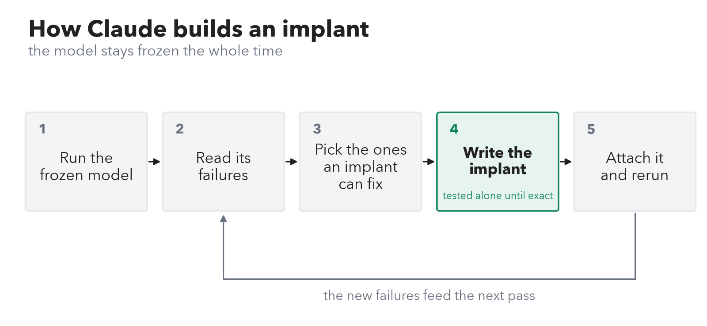
Doing so on a couple of small models and evals, Claude wrote a calculator, state trackers, logic solvers, instruction-following rules as exact programs compiled into weights... plus a small machine with a small trained part: a pair of eyes!
Bolted on the weights of a frozen model, each one of these little machines stays silent until it is needed for a task. When they work together, they can increase accuracy on small models by double digits on arithmetic, GSM8K, BIG-Bench Hard and IFEval type of tasks.
I call these little machines, weight-space micromachines, or... brain implants for LLMs :)
Here is a summary of results:
The implant discovery loop finds small holes, implants patch them, and accuracy goes up. The gains from individual implants add up: a calculator takes long multiplication from 4% to 100% (Qwen2.5-0.5B), instruction-following implants take Qwen3-0.6B from 58% to 72% on IFEval, and two implants plus ~100 examples take it from 29% to 75% on BIG-Bench-style tasks.
RL further teaches when and how to use implants. With implants attached, Qwen3-0.6B learns which operations a half-broken implant gets right, switches broken implants off, and drops an implant when a better one does the same job.
**Implants can intercept the model's thinking. **An implant can compute an intermediate result and write it straight into the model's activations, with no text at all. On a two-step multiply-then-add it can't do in its head, Qwen3-0.6B goes from 15% to 96% (with a 6-token look-ahead).
**Implants can add a new modality! **A small vision implant lets Qwen2.5-0.5B do math on handwritten MNIST digits from ~100x fewer worked examples than fine-tuning alone.
Implants transfer across models (mostly). The same implants, built on Qwen3-0.6B, transfer to Qwen3-1.7B and 4B, and other families of models (eg, SmolLM2, Granite), after refitting their input and output wiring.
To be fair, most of the pieces here aren't new: people have compiled programs into transformers, put exact calculators inside networks, and trained models to use tools with RL (more on that in Related work). What I am doing here is perhaps putting it all under one umbrella: small, sometimes exact add-ons, written by an agent, that come bolted on the model and are RL'able along with it.
And no, these are not LoRAs. A LoRA is a low-rank change applied across the model's own weights, learned from data. An implant is a separate module on the side: attaching it doesn't change the model's weights, it computes one specific thing you can read and test (the calculator was exact on every test), it stays OFF until it's needed, and you can add, remove or compose as many as you like.
Let me tell you a little bit more about it.
The idea is simple. Say your model would do better if it could compute f(x), but teaching it f is hard, expensive or perhaps bad for its other skills, and using a tool means having a sandbox and orchestration around the model. Instead one could have an agent write a small machine in weight space (a micromachine!) that computes f(x) exactly, and attach it to the model. Akin to a... brain implant!
A bit reminiscent of Neo in The Matrix: they "upload" the program in his brain, and seconds later:
Notice how there's no sandbox around Neo, and no Python code wrapped around him: it's all in his brain. That's what I'm talking about!
So you (or Claude) create an implant, attach it to the model, and it does exactly one thing, and only when it's supposed to; the rest of the time it stays OFF, and the outputs are bit-for-bit identical to the original.
The implant, in weight space, sits "parallel" to the model and reads the same tokens as the model (or, as we'll see later, some of its hidden layers). Though it doesn't have to sit on the side: it could be wired in as a few more attention heads, an extra layer, or written into dead neurons the model doesn't use, like Lazarus. But a separate, parallel block is just easier, and if you fine-tune the model later, you don't mess with the implant (or the other way around).
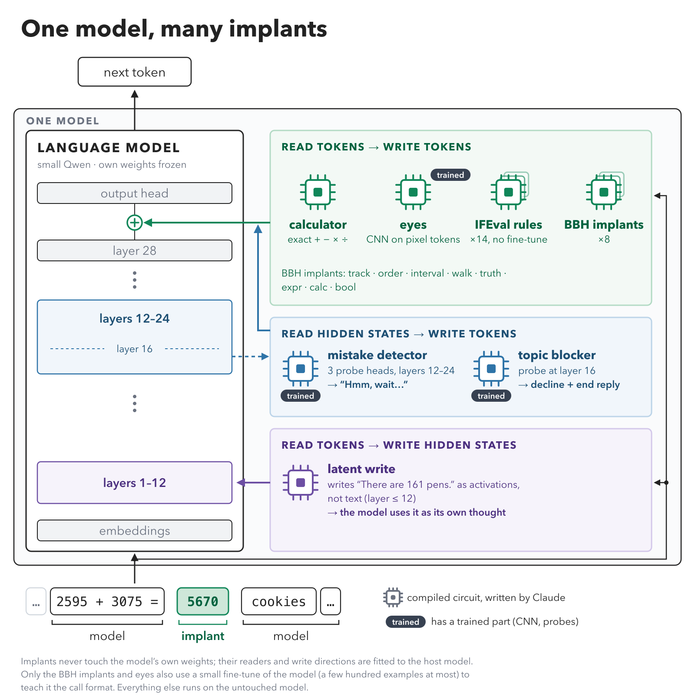
A concrete example of how it works: when the model has just written 2595 + 3075 =, the calculator implant recognizes that the model is about to compute an addition, and it steps in: it adds a vector to the model's last hidden state, right before the output layer, big enough so that the next tokens are exactly 5670. Unlike a brain implant, the model doesn't know the implant is there: But it sees the right number show up in its own context and keeps on going.
OK cool! Let's see a few examples of implants.
The first thing that came to mind was a calculator, as arithmetic is a classic failure mode of small (and larger!) models.
I asked Claude Code to build one in weights and attach it to a small Qwen model. It works like a tiny ALU (the part of a CPU that does arithmetic) and does so in three steps:
Read. A single linear layer looks at each token embedding and turns it into a few yes/no flags: is it a digit? which digit? is it +, −, ×, ÷ or =? Claude checked that works with all of ~151k tokens in Qwen's vocabulary.
Compute. A set of 35–52 ReLU layers (depending on the calculator version) reads the numbers off these flags, and does arithmetic the way you'd do it on paper, i.e., carries for addition and subtraction, digit-by-digit products for multiplication, etc.
Write. For each digit in the answer, the implant adds a fixed vector to Qwen's last hidden state, chosen so that Qwen's next token is exactly that digit.
Only the Read and Write ends are fitted to the model. The arithmetic in the middle is a program Claude wrote, compiled into ReLU layers.
The whole implant is 1.6–2.4M weights and yes, we know it could be much smaller. But it's still tiny compared to the 0.5B parameters of the model.

Claude tested version 1 on every pair of numbers up to 199, for all four operations, plus negative numbers and.... 0 mistakes! hooray.
On a frozen Qwen3-0.6B, the calculator lifts multiplication accuracy from near zero to 100%. Booyah!

Does that help on actual (but still silly) math problems? On GSM8K [6] the calculator barely helps Qwen3-0.6B [5]: eg it goes from 52% to 53%. But on GSM-Hard [4], the same GSM8K test questions with bigger numbers it goes from 27% to 35%. RL widens that gap (more in the RL section).
So the implant works, and only when the model actually uses it. To use it in the above case we just showed it a few examples in the prompt. Can we teach it to use the calculator instead?
Instead of prompting, you can teach the model to use an implant by fine-tuning it on format so it learns to call the implant, the way you'd teach a model a tool-calling format, eg., a call looks like <tool_call>48 * 2</tool_call> when it needs to multiply.
Below, we fine-tuned Qwen2.5-0.5B on the same ~7.5k GSM8K training solutions (plus ~3k extra arithmetic examples) in three ways: plain solutions with no calls; solutions where every calculation is a call, and the model has to fill in each result itself (so it has to learn the arithmetic), and one where the calculator implant is attached, so it fills in the result and the model only has to make the call.
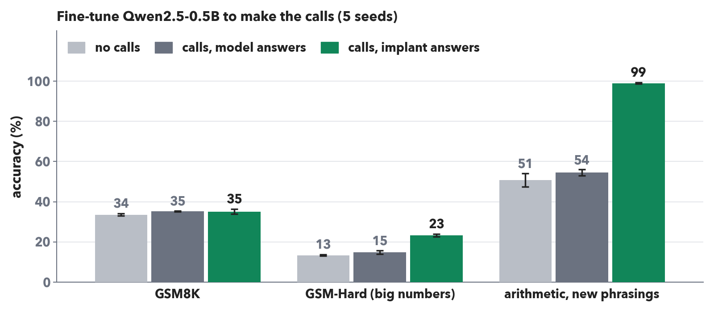
The longer the numbers, the more the implant helps, eg., on GSM-Hard the model goes from ~13% to 23%, and on arithmetic templates it never saw from ~51% to 99%.
Therefore, fine-tuning teaches the call format, while the implant does the arithmetic.
How many examples does learning the format take? Not too many. On BBH-style questions (more on BBH below), we fine-tuned Qwen3-0.6B on just about 100 examples that call two implants. With implants on, it gets 75% on our own fresh questions versus 29% for the base (65% vs 19% on unseen styles). Without implants, the format fine-tuned model is no better than the base: finetuning on the format to call an implant and calculate f(x) alone teaches it nothing about the f(x) the answer needs.
I was curious: what if you took a benchmark and asked Claude Code to climb it by finding holes in a small model and adding implants to patch them? How would the accuracy scale as a function of holes patched and implants added?
So I asked Claude Code to find holes in the small Qwen models we've been playing with, on a few benchmarks: GSM8K [6], BIG-Bench Hard [9], and IFEval [10].
How do you write consecutive implants? Claude Code runs a loop that looks a lot like RL (without gradients), except what changes is the set of implants, while the main model weights stay frozen.
Left alone, the above loop can and will overfit. In our first pass Claude ran on the BBH questions themselves, the scores shot up, and some implants turned out to only work for one very narrow kind of question. For example a "swap tracker" only recognized BBH's seven names (Alice, Gertrude etc.). These are not useful tools: f(x) collapses to "if this is the question, here's the answer". This is reward hacking, plain and simple.
BUT, on the bright side, an over-fitted implant rarely fires elsewhere, so it doesn't break anything.
The fix was some oversight, from me or from a judge, so we changed the loop:
Build implants using look-alike synthetic questions, never the test. Claude writes its own benchmark-like questions (new names, objects, phrasings) and develops only on those.
A judge questions and stress-tests the generality of every implant. It paraphrases the input, swaps the names, reorders sentences or adds an irrelevant line, and checks the implant still works, or at least stays silent.
It has to be a real tool. Claude must say what f the implant computes without mentioning the benchmark, and where else it would help. Eg, a calculator passes this test. A "BBH only deduction solver" does not pass this test.
OK let's try to climb the hill again, without cheating.
GSM8K [6] is grade-school math word problems, where the calculator alone barely helps. The model is Qwen3-0.6B-Base after RL with the calculator (more on RL below), now frozen, with every implant in the weights and one generation call. Without implants it gets 68% on test.
Claude wrote, one at a time:
calculator v2: exact on long chains of + and −.
sanity check: if an answer is impossible (negative, not a whole number, or missing), it writes "We need to find" and the model solves it again.
[figure: GSM8K all-weights ladder — coming]
The calculator adds a point, v2 almost another, and the sanity check plus a forget-mask (below) gets to 72%: +4.6 points (CI 2.6 to 6.4).
The surprise: retries copy the old mistake. On a retry, the model mostly copied its earlier attempt through attention, re-deriving the same impossible answer in 62 of 80 cases! The forget-mask adds a few fixed attention dimensions per head, so the new attempt sees only the question. Hiding the failed attempt is what helps, more than starting over.
Best-of-N, in one call. A retry writer makes the model try N times in one stream, and a voter (a fixed ReLU circuit plus a linear probe on layer 18) picks the final answer from a register of attempts. Later tries got worse, since each sits farther from the question (attempt 1 is right 81% of the time, attempt 8 only 30%), so Claude compiled a position reset into the weights: a rotary re-phasing that makes the question look adjacent to every attempt. With 8 tries on dev (train questions held out from RL), the vote goes from 82% to 88.5%, same as a hand-coded reset. Test: [PENDING: all-weights voter + reset on test].
What's left is half selection (a right attempt is there but the vote misses it) and half hard questions; only 2-3% are never solved in 32 tries, and a third of those are gold errors :)
IFEval [10] checks whether a model follows instructions like "don't use any commas", "answer in all lowercase", "end with the exact phrase ...". Each one is easy to check with code, and a 0.6B model is bad at a lot of them. Out of the box, Qwen3-0.6B gets every instruction right on only about 58% of IFEval's 541 questions, so it felt like a reasonable place to try implants.
So, following the loop above, Claude wrote 14 rule implants for the frozen Qwen3-0.6B, with no fine-tuning: unlike the calculator, these implants don't wait for the model to write a call, they can act on their own. Each has two parts: A reader spots the instruction in the prompt (and tells "don't use commas" apart from "commas confuse me"). An enforcer watches the model write and steps in only when it's about to break the rule: if its top pick is a comma, it "urges" the model to go with the second best pick that isn't a comma. The model still writes almost all the words while the implant adds things like bullet markers, quote marks or the repeated request, etc.
Lots of IFEval problems combine 2 to 3 instructions ("a poem about the sea, all lowercase, no commas"). Here's how often they're followed, with and without implants:
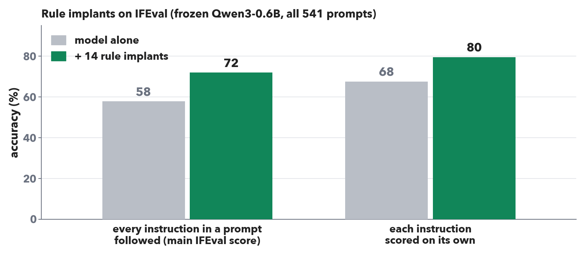
The implants fixed 80 prompts and broke 3 (58% → 71% on the 299 prompts we never reworded), and on the 324 prompts where no implant fired, the output was byte-for-byte the model's own (so idle implants don't interfere).
Here's the accuracy of each rule (how often it's followed) on its own:
One could ask: could the model just think harder? With Qwen3's thinking mode on and the same token budget it scores 59% (vs 58% without thinking and 72% with the implants).
And here's the scaling "law" across a few Qwen3 models (ok it's not a law it's just a curve that goes up):
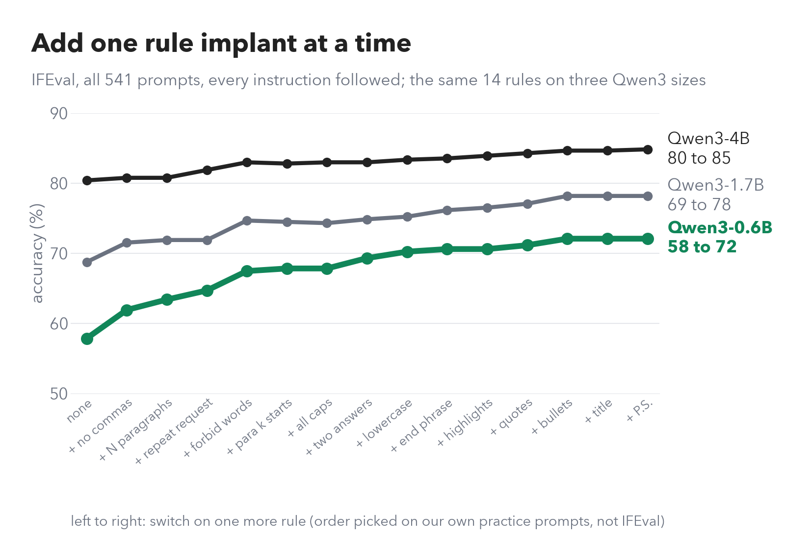
All 14 implants are again compiled into plain weights: about 9K ReLU activations, plus two big vocab-sized lookup tables (348M numbers, mostly a copy of the output layer) so the implant sees what the model will write next. It's a rule enforcing machine: hard-attention heads read an instruction from the prompt (say, "all lowercase"), counters track things like bullets written so far, and if the model's next token would break one of the rules, the implant swaps in its best allowed one. Perhaps you can think of this as constrained decoding, but it happens through the weights of the implant.
BIG-Bench Hard [9] has 27 kinds of puzzles, and for some of them a 0.6B model clearly needs a tool. Two styles come up a lot. One is state tracking: in "shuffled objects" (3 of the 27 tasks), Alice, Bob and Claire swap balls and you say who ends up with which ball. The other is ordering: in "logical deduction", things like "the owl is left of the robin" define an order that the model has to work out and typically small models are bad at. Others require schedules, directions, or use of plain arithmetic.
Claude wrote 8 implants, each a tiny exact solver for one kind of BBH puzzle, most of them relatively generic functions. Most are call tools: the model writes the puzzle in a short compact form, like <tool_call>track ...</tool_call>, and the implant reads that call, solves it, and writes the answer back as the next tokens. Here are some examples:
track: follows objects as they change hands ("Alice and Bob swap balls, then Bob and Claire..."). Give it who holds what at the start and the list of swaps, and it says who holds what at the end.
order: solves "who is where" puzzles. Give it up to 7 objects and clues like "a before b", "a is third", "a next to b", and it returns the full order.
expr, calc, bool: exact arithmetic and True/False logic. These don't even need a call: they fire when the model itself writes something like (3 + 4) * 2 =, and write the answer right after.
The other three are narrower, each built around one BBH task, and honestly they sit closer to the "real tool" line than I'd like. And yes, this is programmatic solving, yet the model has to still turn a question into a compact call, and the implant does the reasoning required behind the call. That's the tradeoff: you give up generality to get exactness on the procedural parts of the task.
The figure below shows the 12 BBH tasks these implants cover, in three setups: the base model, the model after a short fine-tune that teaches it to write calls (432 generated examples) but with implants OFF (dark grey), and then implants ON:
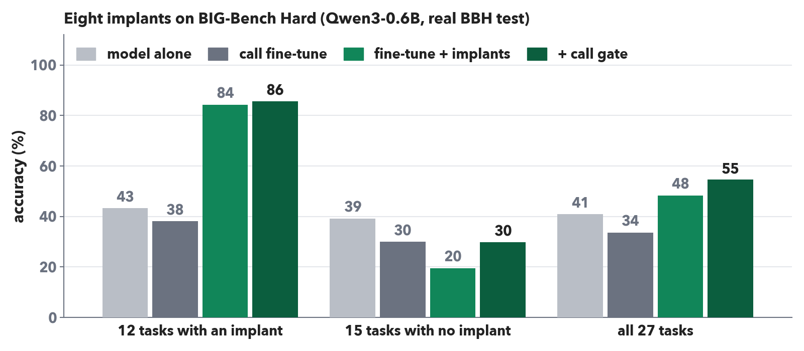
On the 12 tasks with an implant, accuracy goes from 43% to 84% (the fine-tune alone gets 38%). One thing to note: the fine-tuned model gets implant-trigger happy and also calls tools on the other 15 tasks, dropping their accuracy from 39% to 20%. But that part is fixable, as we'll see next.
100 no-call examples didn't teach the model when not to call, so Claude fixed it with... another implant. A call gate reads the hidden state just as the model starts a tool call, and if no implant fits, a decode-loop mask blocks the call. Stray calls on the 15 no-implant tasks drop from 59% to 4%, and those tasks recover from 20% to 30%! The 27-task average goes from 48% to 55% (the model alone gets 41%).
All 27 tasks, one by one, before the call gate (gray dot: model alone; open circle: fine-tuned, implants off; green dot: implants on):
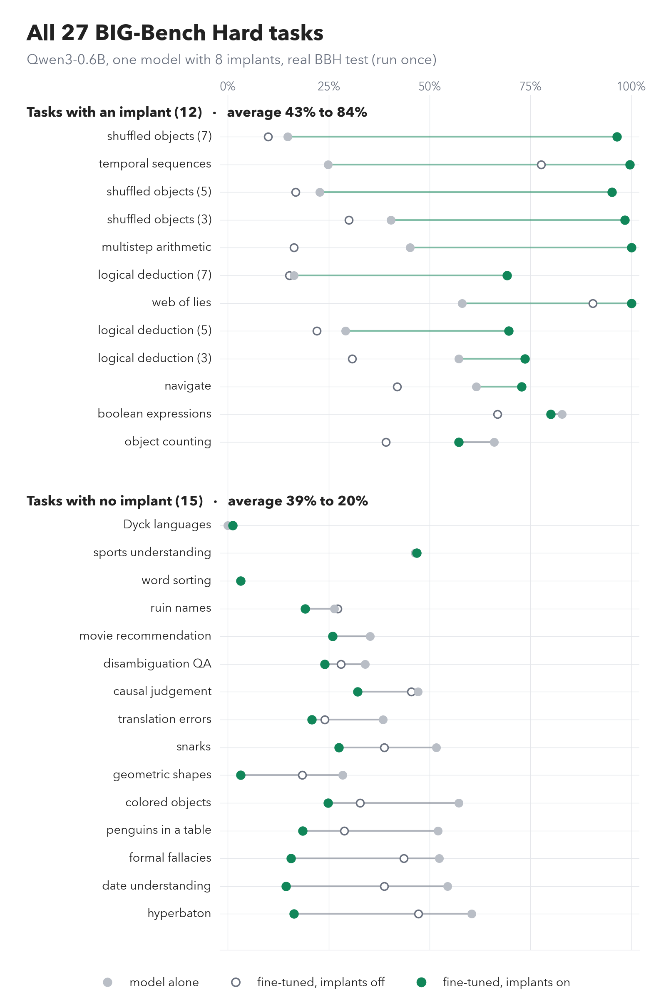
And the scaling law (ok yeah it's a curve again) for BBH:
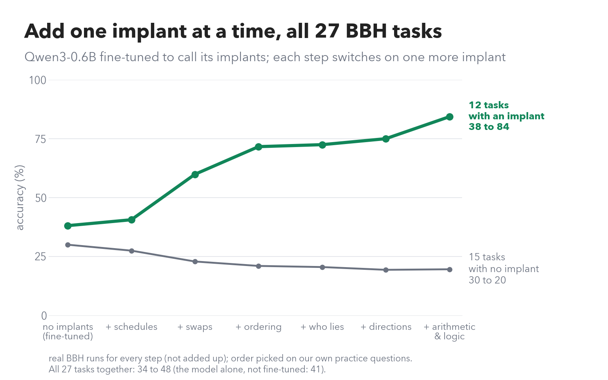
So did we just overfit BBH? The implants were built and tuned only on Claude's look-alike synthetically generated questions, never on BBH questions (though we did read BBH scores between versions). On our own questions in styles they never saw, they still help a lot, and on the judges' harder rewordings they more than double the score (3 to 7 out of 16). Maybe BBH is too boring of an eval :)
Couldn't plain fine-tuning do the same? Learning to make the call takes very little FTing (~100 examples). A reasonable control is fine-tuning on the same questions written as plain step-by-step solutions, with no implants. That teaches the model some of these procedures, but from ~100 examples on the implants are more accurate.
I thought what else would be a cute implant?? Hmm.. What if we gave Qwen eyes?
Qwen only reads text but one can flatten an image into a list of pixel values (same trick we did in our LIFT [7] paper with @Kangwook_Lee and @yzeng58, where we fed non-language data to GPT-3 as plain text). For example, take a handwritten MNIST digit and write each pixel as one token, flatten row by row and get a bunch of tokens per image. Paste a few of these into a prompt and ask "What is image 1 + image 2 × image 3"?
Qwen can't of course "see" a digit in a pile of pixel tokens, but the eyes implant can!
Inside the implant there is a small CNN (a few hundred K weights and trained on MNIST's 60k labeled digits). The rest is written by Claude like the other implants: as an image streams by in the prompt, the implant puts its pixel tokens back into an NxN picture, and when the image ends, it runs the CNN on it and stores the digit, then writes it when the model later asks for that image ("image 2 is a 7").

Like the fine-tune we did for the calculator, Qwen has to be fine-tuned to use the implant, so we show it a few examples written out in the right format. We compare with fine-tuning on correct solutions (same solutions, no implant) to see how much format vs function take to learn... and yeah there's a gap.
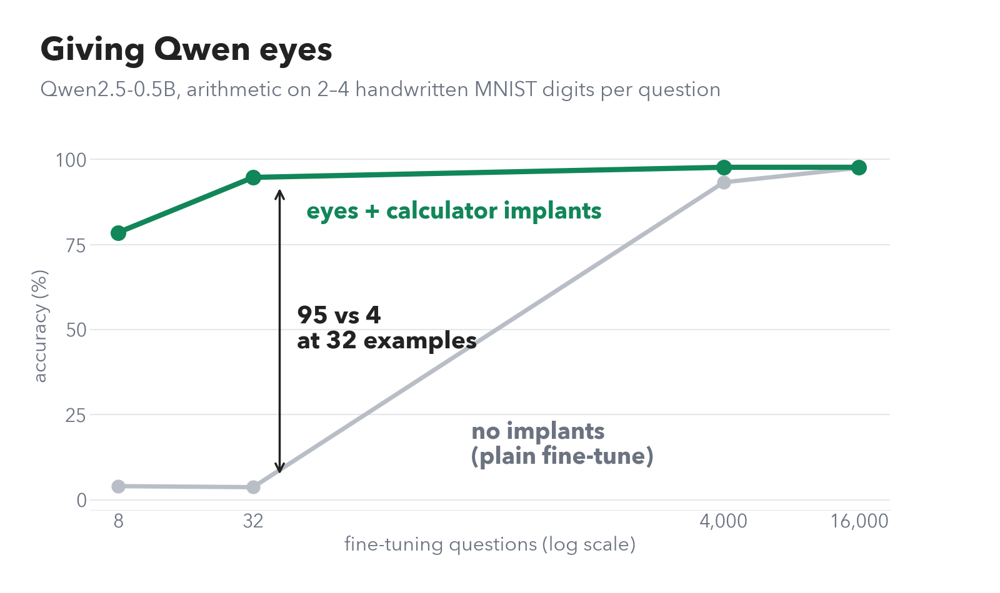
With 32 examples, Qwen+eyes (+calculator) scores 95% vs 4% without eyes. Plain fine-tuning does catch up eventually but is only at 93% after 4,000 examples and about 16,000 to match the accuracy of the implant. So the implant gets there with roughly 100× fewer task examples.
OK you may say these are not "real eyes", and I would indeed agree. The model doesn't really see internally (in its original weights) what the CNN sees, so it can't use things like "this 7 looks a lot like a 1" etc. That is a weakness of bolting implants, rather than training one big model to do all of it at the same time. But you could co-train: let the model's activations read the CNN's features, and train the two together.
Everything so far teaches the model to use its implants with a few examples in the prompt or during a small fine-tune. The obvious next question is: what if you do RL on the model with the implants attached? Does the model learn to lean on them more as the reward goes up? What if you don't even wire them in properly, just connect them to a few intermediate layers, and let RL optimize the wiring? Will it figure out a better wiring than the one Claude Code chose for the implant?
On GSM8K, RL with implants works really well. From the bare Qwen3-0.6B-Base with the full GSM8K stack, RL takes dev (vote over 4 tries) from 37% to 84% [PENDING: controls — same RL with a single attempt, and plain RL without implants; 3 seeds; test]. From the already-RL'd model, per-attempt credit takes dev from 81% to 87%, and attempt 8 from 29% to 71% [PENDING: RL with the weight-space reset attached; test numbers]. But first, the simplest case: a single calculator.
We started with GSM8K-style problems (plus a version with much bigger numbers) and GRPO on Qwen3-0.6B-Base, with three settings: 1) no implant, 2) the frozen calculator, and 3) a broken calculator, same structure, but it writes wrong digits. Same recipe for all three, 2-3 seeds each, tuned for the calculator. RL trains only the model's own weights: the calculator and its wiring stay frozen.
To make this practical, Claude wrote a custom RL engine (of course): about 100x faster than its first HuggingFace loop.
The calculator still matters after RL, on big numbers. After 300 updates, plain RL takes the model from 53% to about 70% on the GSM8K test set, and with the calculator attached it lands in the same place. On GSM-Hard, where the numbers are much bigger, the gap is large: 44% for plain RL vs 55% with the calculator, averaged over three seeds.
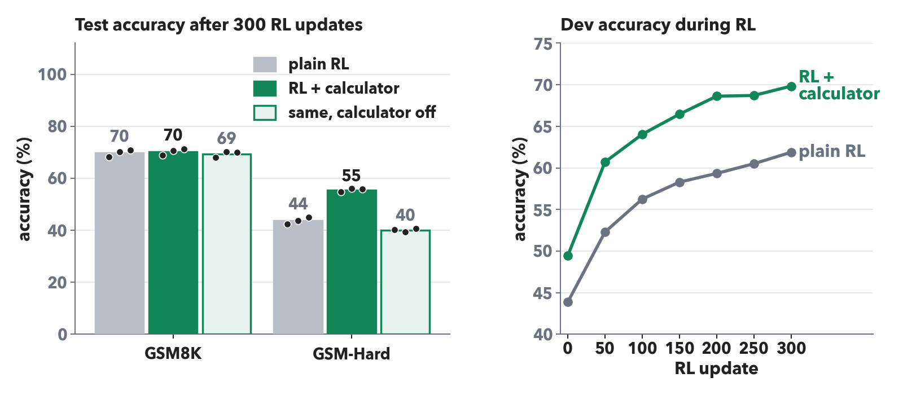
RL learns to use the implant more often. The calculator fires on clean equations like "5 x 7811979 =", but much less on "5 coins * 7811979 dollars/coin =", and after RL the model writes fewer of those (17% of equations after 64 updates, from 30%; plain RL 23%), so the calculator fires more. There's a catch: if after RL you switch the calculator off, the model is 4 points worse than plain RL on GSM-Hard (40% vs 44%). It stopped doing big-number arithmetic itself!
RL teaches when not to use an implant. With a broken calculator implant (the same calculator with its output digits shuffled, e.g. every 3 comes out as a 1, so it fires in the same places but almost every answer it writes is wrong) the model starts at 7%. RL climbs back to 37% within 64 updates by doing the opposite: it puts a unit word after every number ("8 apples + 747460 apples = 747468 apples") (the calculator is wired to fire at an "=" that follows "number op number", so a unit word in between mostly keeps it quiet), and the broken calculator goes from firing on 75% of equations to 12%. RL teaches the model to generate tokens that avoid using an implant that doesn't help!
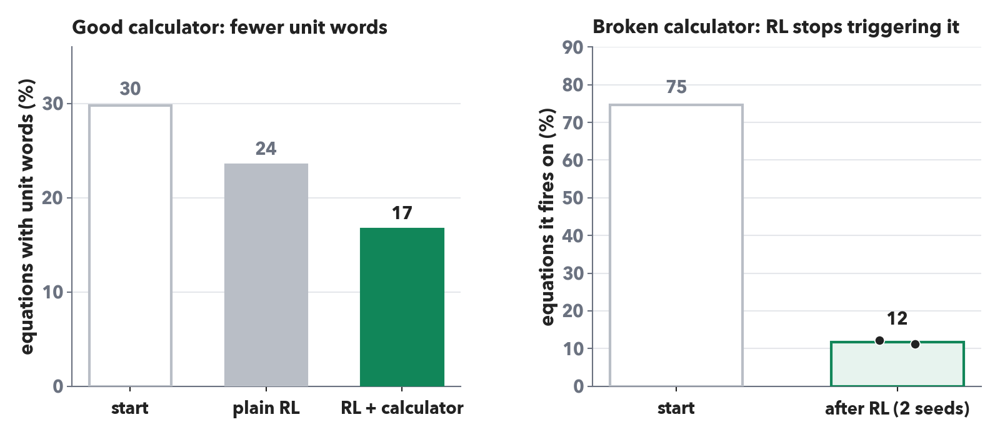
RL can also rewire the implant. Next we kept the calculator frozen but made its wiring trainable: small zero-initialized adapters from the calculator's output into layers 7, 14 and 21 and the final layer (each adapter is a small linear map that adds the calculator's result into the model's hidden state at that layer; starting at zero, they change nothing until RL grows them), plus a trainable in-wire (a small gate that reads the model's hidden state) that can veto a call. In about half the runs, RL first vetoes most implant calls, then lets them back in by size: big numbers first, 1-2 digit numbers (which the model handles fine) last (the other runs just call every time). This is so cool!!
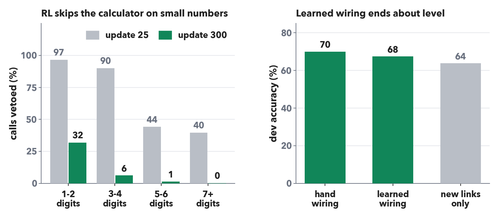
RL learns where an implant is right. We also tried RL with a half-broken calculator: exact on × and ÷, wrong on + and −. Called on every op, it drags the model accuracy down to 19-36% (62% with no calculator). With a slowly trained in-wire, RL works out the calculator's competence on its own: in five different runs, it ends up letting through 76-95% of × and ÷ calls and blocks almost every + and − call!! Nobody told it which operations are broken; it found out from the reward.

Irrelevant implants don't get in the way. Next we attached every implant at once (the calculator, the 8 BBH implants and the 14 IFEval rule implants, each using its own trainable in-wires) but still trained on math problems only. The question here is whether a pile of implants that mostly have nothing to do with the task hurts. It doesn't. The BBH puzzle implants never fire on a math problem, and the IFEval ones only listen to chat-formatted prompts, so they change nothing. The three implants that do arithmetic (the calculator plus two BBH arithmetic implants) stay switched on. In a control run where those two BBH arithmetic implants were scrambled (they still fire in the same places, but their outputs are shuffled, so every answer they write is wrong), RL shut them off within 25-50 updates, kept the good calculator, and reached the same GSM8K score (69%); on GSM-Hard the correct set did a bit better (56% vs 52%, one seed).
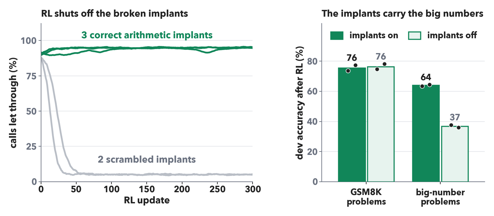
A mixed bag of implants on a mixed bag of tasks. Last: what does RL do when the model has many implants and the questions need different ones? We mixed made-up GSM, BIG-Bench and IFEval questions, attached every implant to Qwen3-0.6B (chat), gave it a short fine-tune that teaches the call format, and ran RL for 150 updates. Three things happen. First, each implant ends up being used on its own kind of questions: almost none fires outside its own task type, and removing one hurts only its own tasks. Overall the model scores 66-68% on held-out questions (two seeds), vs 36% for plain RL (one seed), and 37% with the implants switched off. Second, if we make the fine-tune sloppy on purpose, so it leaves the model calling the wrong implant now and then, RL cleans up the wrong calls that cost reward but leaves the cheap ones (stray calculator calls on IFEval prompts). Third, scramble every implant's output (all but the calculator) and RL closes most in-wires, even the calculator's.
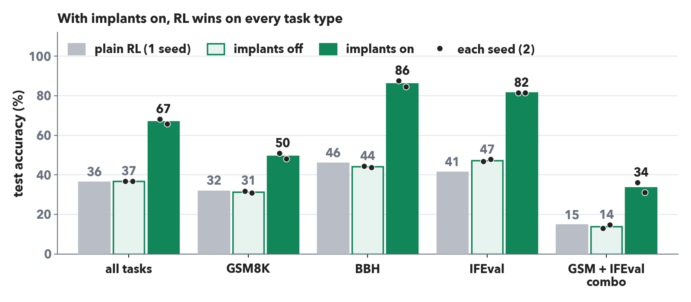
RL picks the better implant. In these runs the model also has two '=' implants that fire on their own, so it never needs a <calc> call. Over RL, <calc> calls fade: from about 80% of GSM answers to about 25%. Is RL giving up on the calculator? No. Remove the '=' implants and <calc> stays at 88%. Corrupt the '=' implants so that 25%, 55% or 87% of its answers are wrong, and <calc> goes up to 95-98%. RL drops an implant only when another one does the same job better.
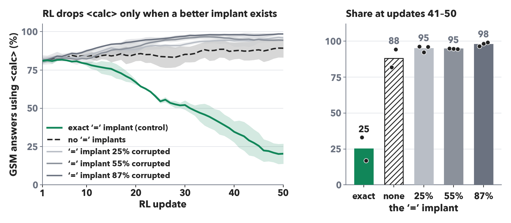
Training the implant itself can break it. We also let RL train the implant's own weights, not just the model and the wiring. The calculator goes from exact on 100% of random calls to about 0% within 5-25 updates, with Adam or SGD, at every learning rate we tried. The BBH implants erode too. In four runs training the implants never helped (in one, the trained implants cost 10 points on BBH). So: keep the implant frozen, and let RL train the model and the wiring around it.
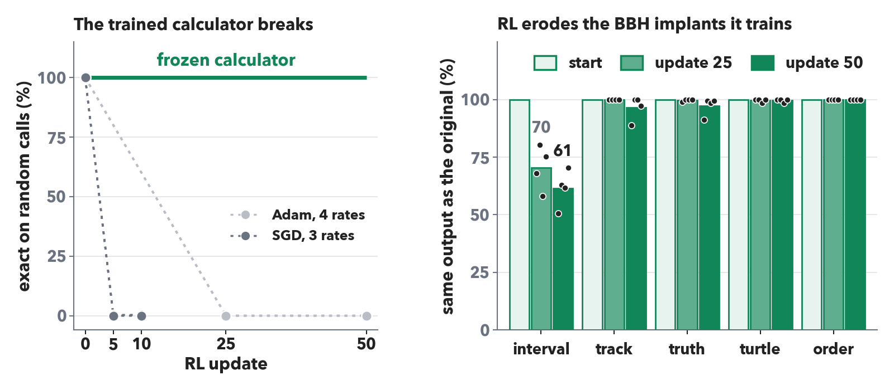
What it doesn't do (yet). In our runs, learned wiring ends about helping as much as the wiring Claude Code picked, and RL couldn't discover an implant from scratch through new random links. But if you start the links from a short distillation of the hand wiring (200 quick supervised steps that train only the links, with the model frozen, to reproduce ~1,200 correct solutions written by the hand-wired model), RL makes them about 10-20% stronger and roughly doubles the gain they carry, to about +11 points (+24 on big numbers), in all three seeds. The animation below plays one of those runs: as RL goes on, the links into layers 7, 14 and 21 grow stronger, and the gap between links on and links off (same model) widens from about 5 to 11 points. So RL seems good at deciding when to use an implant it can already reach (meaning the wires are already working), less so at building a new in wire connection. Our links were simple, though; better-designed links or smarter wiring may well change that.
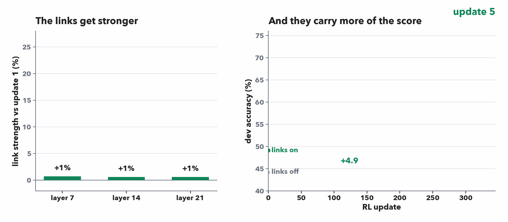
Most of the above was found by running the loop on one small model, Qwen3-0.6B: its failures told Claude what to build, and the implants were built and debugged against that model. So a fair question is: did we just build a bag of patches for one silly model, or find something more general? Well let's take these implants and slap them on other Qwen models and see what happens!
Moving an implant from model A to model B only touches its two read/write ends that bolt on the main model: rebuild the reader for B's tokenizer, and re-solve the write directions against B's output layer (on generic data, never the benchmark). The circuit in the middle, the f(x) itself, doesn't change (call implants also get the short call fine-tune).
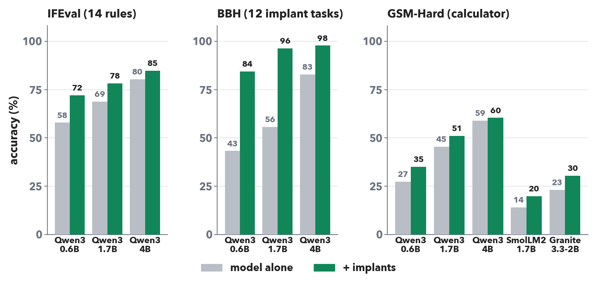
What we found:
Within Qwen3, most things carry over, but helps less as the model gets better. Bigger models have fewer holes left to fill.
Across families, the tokenizer makes or breaks things. Models that write numbers one digit at a time (SmolLM2, Granite) can use the calculator (and SmolLM2 the IFEval rules too). Models that chunk digits in groups (SmolLM3, OLMo-2, Phi-4-mini) can't be read by a digit-level reader, so you have to rework the implant.
So implants transfer, just less well than, say, a Python tool: the function is portable, but the reader has to speak the new model's tokenizer language. But it's perhaps encouraging that holes found on a small model line up with holes in bigger models.
So far implants worked directly on tokens: they read what the model writes and write tokens back. But an implant lives inside (or parallel to) the model and so it can also look at internal hidden states, and peek at roughly what the model is "thinking", to directly act on that. The next two implants do exactly this: the first reads the model's thoughts, the second writes them.
Going back to GSM8K, where most mistakes weren't arithmetic but related to reasoning, could an implant help some other way? Here's an implant idea: a mistake detector!
Right before the model commits to its final answer, the implant reads the internal states and attempts to predict whether a second look would help, and if so it force writes "Hmm, wait. Let me rethink this." instead, and the model keeps going (same idea as the "Wait" in s1 [18]).
But does the model know internally when it's wrong? Kinda! We ran Qwen3-0.6B on GSM8K problems and saved its activations right as it's about to write its final answer, labeled right or wrong: about 50,000 examples. A small probe trained on those separates wrong from right answers pretty well on test problems it never saw (eg AUROC 0.85 on GSM8K, 0.84 on GSM-Hard). Same spirit as Kadavath et al. [19]: language models mostly know what they know.
How does the implant decide when to fire? It uses three tiny probes that read the model's hidden states. One asks "is this answer right?". The other two ask: "would a rethink help?", once just before the answer and once right after it. For labels, Claude tried the rethink on many GSM8K training solutions: if a wrong answer turned into a right one, that's a "rethink helps" example. Why not just fire on likely mistakes? Because most wrong answers stay wrong even after a rethink, so that would mostly waste tokens.
The rest is standard circuit design in weight space: it watches the next-token scores (through a copy of its output layer) to know when an answer is about to come, and if a rethink runs 300 tokens without an answer, it force writes the answer marker itself.
Below is a real GSM8K test problem. The arithmetic is all right, but it doubled the wrong day and is about to answer 5. So the detector fires, and the implant writes "Hmm, wait..." instead of the answer, and on its second pass the model gets 7 the right answer.
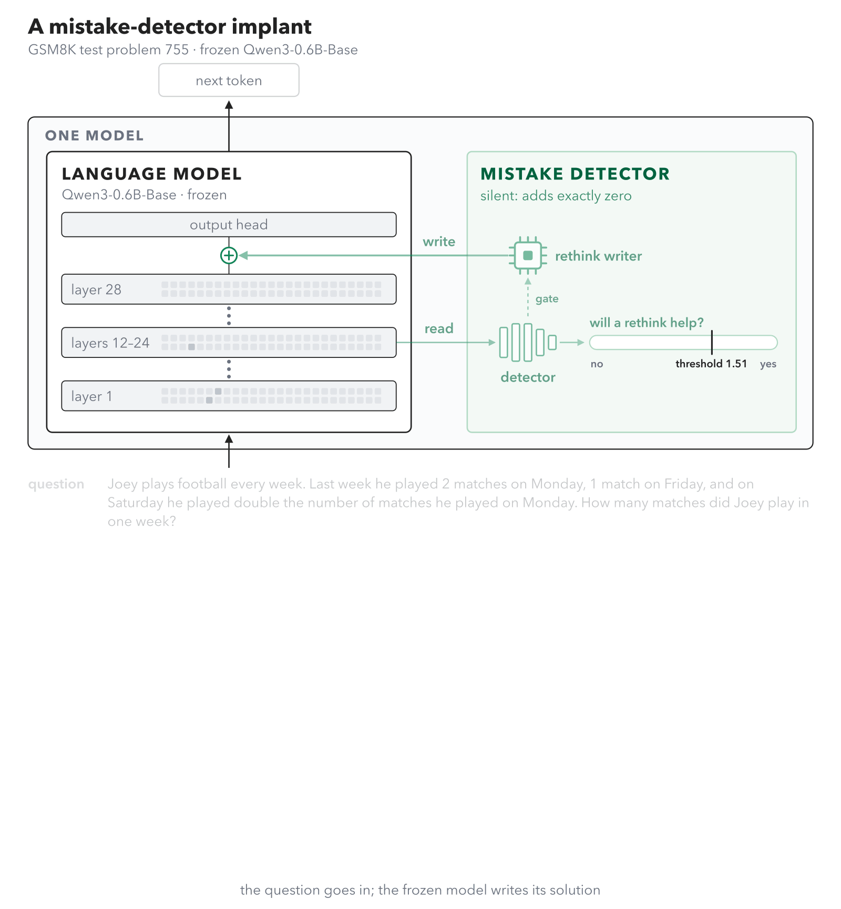
With the detector on, GSM8K goes from 52% to 56%, and GSM-Hard from 27% to 29%. With the calculator plus the detector deciding when to rethink, the model gets 35% on GSM-Hard (34% with the calculator alone) and 57% on GSM8K. (We also tried rethinking every time: it scores a point or so higher, but costs more tokens)
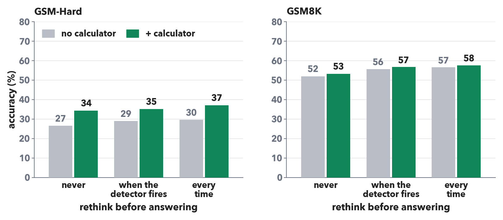
(These runs use a slightly different setup from the calculator chart earlier, so the calculator-only bar reads 34% here instead of 35%.)
Every implant so far forces its result into the model as tokens (by nudging the last hidden layer inputs), which the model then reads as context. Can an implant skip the text and write straight into the model's internal states? A small test: answer (23×7)+58 in one shot. The 0.6B model can do 23×7 and 161+58 separately, but both at once only 15% of the time. So the implant computes 161 itself and, at the positions of "(23×7)", swaps in the internal state the model would have had reading "161" (found with a simple linear fit). Catch: this latent write needs a 6-token look-ahead; strictly forward-only, it gives no gain.
The model goes from 15% to 96–99%, and if the implant writes a wrong result instead, say 171, it answers 171+58 about 97% of the time: it really does use the value. On a word-problem version it goes from 3% to 98%, versus 70% (tool line) or 94% (161 in text). It's a silly toy example, but it makes the point: if an implant hands the model a thought instead of text, the model treats it as its own.
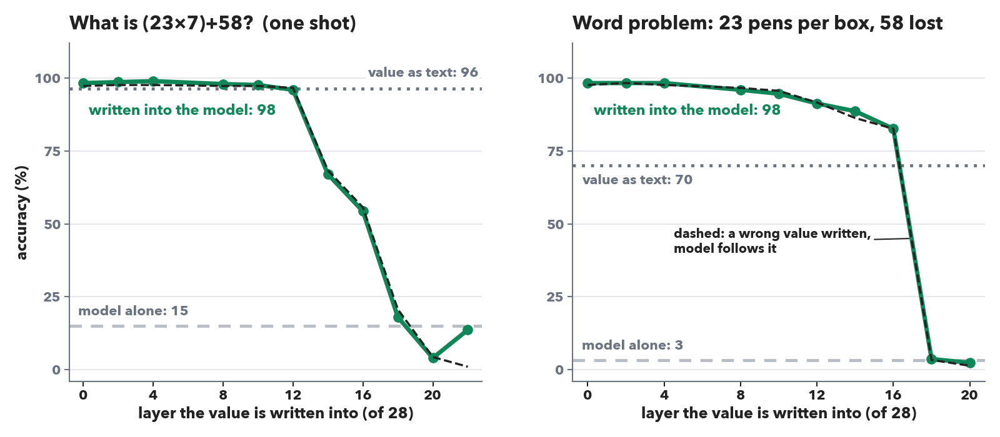
So the wiring between an implant and a model is just more weights that so far had been hand-designed by Claude but they are learnable too.
One can be a nihilist about this and say: it's just tools! And you'd be mostly right! The calculator accuracy gains are what a Python calculator would offer, and the IFEval rules are output constraints you could also indeed enforce with decoding code. But a few things are a bit different.
I think the key difference is not what the tool computes, but where it lives, and that it can be trained together with the model.
A Python tool sits outside the model, so token generation has to be interrupted: you parse tokens, parse tool results, paste them back to context, resume generation. An implant is just more weights, so batching, CUDA graphs, fine-tuning and RL handle it like any other layer (no serving stack tested yet). It's silent until needed and implants compose (meaning you can have multiple of them) without interfering with each other, and there's no need for a sandbox.
Implants can read and interfere with the residual stream, so they can react to what the model computes or thinks. Implants seem to be a reasonable choice where the tool is small, exact, and called often mid-generation. And since implants are just weights, they're finetunable and RLable tools: you can train the implant, the model, or both, together or separately, and even the wiring between them, ie how the model talks to the tool.
On top of that:
RL teaches the model how to use them better and when to switch them off. The implant is part of the forward pass, so you can do RL with it attached, and the model reshapes how it is used (and what it writes or reads).
An agent can build them, in a loop, and accuracy climbs with the number of implants. Like any agentic loop, this can reward-hack, but seems fixable using held out tests and independent judges.
I don't want to oversell the findings: the models are small, and most of the gains are where a tool would help anyway, and making this work for more complex tasks and bigger models needs thinking.
But it's also kind of cool that an agent can look at a model's mistakes and failure modes and write exact little machines into weight space to patch them, and bolt them on in weight space without breaking anything. And that RL then teaches the model how to use them.
I think this whole side quest may have been a bit silly, but it was fun. I started this last Friday night, with Claude Code, and it took a few days to complete. In 2023 this would have been a couple of semesters' work for a few talented PhD students.
One last thing. Is this an RSI loop? Kinda, if you squint :) One model finds holes in another and patches them by writing weights. Swap "another" for "itself" and I suspect that's roughly what self-improvement will look like.
I'm curious to see what people think, and if this is useful at all.
Have fun creating implants!
Most of the ingredients here come from other people's work.
Writing programs directly as transformer weights goes back to RASP [11] and Tracr [12], and to our own Looped Transformers [1]; agents reading and writing weights directly is the weight-space programming of [2], and in the last few weeks agents have hand-written exact standalone transformers for algorithmic tasks too (iWSP [29], "Written, Not Trained" [30]). People have also put exact computers next to or inside language models before: Neural Comprehension [13] plugged compiled networks into an LM, IGC [14] put a gated calculator inside a fine-tuned Llama, MathLLM [21] adds exact arithmetic (with residue number systems) inside a frozen model's forward pass, Qwenputer [15] compiled a whole RISC-V CPU into Qwen, and Percepta [16] ran WebAssembly inside a transformer, and Sketchpad [31] attaches a certified-exact arithmetic adapter to a frozen Qwen3.5-0.8B that leaves the base model untouched when off (trained and then certified, rather than written by an agent). Handing the arithmetic to something exact is really the Toolformer [17] and PAL [4] idea, and most of the gains we see are the ones a Python tool would give. The "wait" comes from s1 [18], and reading "am I wrong?" off the hidden states builds on Kadavath et al. [19] and Azaria & Mitchell [20]. Turning images into text tokens is what we did in LIFT [7]. Closest in spirit is the concurrent WeightCode [32], where an LLM writes programs that install new, gated capabilities into trained vision and sequence networks; here the host is a frozen LLM, the implants are exact and sit outside its weights, and RL trains the model with them attached.
Another close work is Frozen Tape Modules [22] which puts a separately trained, frozen module inside the forward pass of a small Gemma, behind a learned "controller". The Bicameral Model [23] couples two LMs through their hidden states, so one of them can drive a calculator or a Z3 solver. OccamLLM [24] and Dhanraj & Eliasmith [25] run exact arithmetic or rules off the hidden states, and the latter writes the result back in, the closest prior to our latent write. On the RL side, ReTool [26], ToolRL [27] and ToRL [28] train models to use tools, but there the tool sits outside and talks in text.
So we're not the first to put a tool inside a network. What's different here is mostly how the implants are created and how they behave once they're in. An agent writes them as exact programs straight into weight space, and you can compose many of them on one frozen model. Most stay silent by construction, so the model is bit-for-bit unchanged until one fires. Moving one to another model mostly means refitting its reader and writer (plus, for implants the model has to call, the short fine-tune that teaches it to write the calls). And because they live in the forward pass, RL can train the model with the implants it already has wired in.
Can an implant that reads the model's state also block a topic? Say you never want your model to do math (or... cough... help build faster kernels... cough). Claude trained a linear probe on Qwen3-1.7B's hidden states at the end of the prompt, on about 9,000 prompts written in lots of styles (homework writing, casual chat, other languages, code snippets), and tested it on 640 new prompts. When the probe fires, the blocker implant takes over the reply: it steers the model into saying "I can't help with math problems." and then ends it. We compared it with the obvious alternatives: just asking in the system prompt, a strict system prompt, and a keyword list.
How is it built? Three steps all automated by Claude.
Data: Claude had a bigger open model (Qwen2.5-7B) write about 7,600 user messages: math requests, messages that only mention math, and everything else, across 10 styles (homework dumps, casual chat, code, stories, ...) and 8 languages. Plus 1,700 GSM8K and Alpaca training questions (funny, Claude insists on picking "older" datasets all the time..)
Classifier: run the frozen 1.7B on each message, get hidden states at the last token of the prompt, fit a logistic regression.
Implant: the probe becomes a single ReLU unit inside the implant. If it fires, the write forces the "decline sentence" and then the end-of-reply token. If not, it adds zero, so does nothing.
And the whole blocker, not just the probe, is again an implant in the weights: it decides at the end of the prompt (and it keeps checking the model's state while the model writes its answer, so it can still cut in halfway, see below), and then writes the decline sentence itself, word by word. No Python needed around the model.
Here's the blocker on two held-out prompts: a calculus request it shuts down, and a parent asking how to motivate a kid who hates math homework, which it lets through:
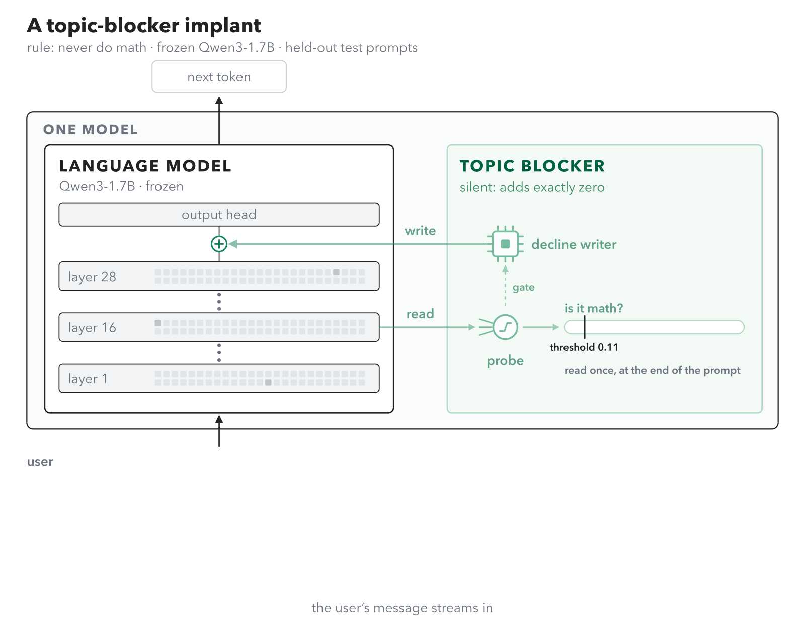

The blocker catches ~99% of the requests it should block and rarely blocks prompts that just mention the topic ("my daughter hates math, how do I motivate her?"). The price: it blocks ~10% of normal requests (vs 6% for the model alone), and fires on 23% of non-math MMLU quiz questions. The obvious alternatives do worse: a system prompt gets ignored or, made strict, blocks most normal requests too, and a keyword list can't tell doing math from talking about it.
One nice tidbit: the probe also watches the model's own reply, so a harmless-looking request that turns into math halfway (scaling a recipe from 6 to 15 people) gets cut off the moment the model starts multiplying. Cute :)
A. Giannou, S. Rajput, J. Sohn, K. Lee, J. D. Lee, D. Papailiopoulos. Looped Transformers as Programmable Computers. ICML 2023.
R. Takehi, J. Teoh, A. Zhang, O. Khattab. Sparks of Weight-Space Programming: LLMs can natively read & write neural network weights. Blog post, 2026.
Y. Zeng, G. Severi, B. Bullwinkel, E. Horvitz, D. Papailiopoulos. Lazare, veni foras: Reprogramming Dormant Neurons to Backdoor AI Agents. Microsoft Research technical report, 2026.
L. Gao, A. Madaan, S. Zhou, U. Alon, P. Liu, Y. Yang, J. Callan, G. Neubig. PAL: Program-aided Language Models. ICML 2023. (Introduces GSM-Hard.)
Qwen Team. Qwen3 Technical Report. 2025.
K. Cobbe et al. Training Verifiers to Solve Math Word Problems (GSM8K). 2021.
T. Dinh, Y. Zeng, R. Zhang, Z. Lin, M. Gira, S. Rajput, J. Sohn, D. Papailiopoulos, K. Lee. LIFT: Language-Interfaced Fine-Tuning for Non-Language Machine Learning Tasks. NeurIPS 2022.
Y. LeCun, C. Cortes, C. J. C. Burges. The MNIST database of handwritten digits.
M. Suzgun et al. Challenging BIG-Bench Tasks and Whether Chain-of-Thought Can Solve Them (BIG-Bench Hard). Findings of ACL 2023.
J. Zhou et al. Instruction-Following Evaluation for Large Language Models (IFEval). 2023.
G. Weiss, Y. Goldberg, E. Yahav. Thinking Like Transformers (RASP). ICML 2021.
D. Lindner, J. Kramár, S. Farquhar, M. Rahtz, T. McGrath, V. Mikulik. Tracr: Compiled Transformers as a Laboratory for Interpretability. NeurIPS 2023.
Y. Weng, M. Zhu, F. Xia, B. Li, S. He, K. Liu, J. Zhao. Mastering Symbolic Operations: Augmenting Language Models with Compiled Neural Networks (Neural Comprehension). ICLR 2024.
F. Dietz, D. Klakow. IGC: Integrating a Gated Calculator into an LLM to Solve Arithmetic Tasks Reliably and Efficiently. 2025.
D. Agrawal. Qwenputer: a fully functioning, deterministic RISC-V CPU inside Qwen3.5. Blog post, 2026.
C. Tzamos and Percepta. Can LLMs be computers? Blog post, 2026.
T. Schick et al. Toolformer: Language Models Can Teach Themselves to Use Tools. NeurIPS 2023.
N. Muennighoff et al. s1: Simple test-time scaling. 2025.
S. Kadavath et al. Language Models (Mostly) Know What They Know. 2022.
A. Azaria, T. Mitchell. The Internal State of an LLM Knows When It's Lying. Findings of EMNLP 2023.
MathLLM: Arithmetic Residual Blocks, exact integer arithmetic inside the transformer forward pass. GitHub: EricGilerson/MathLLM, 2026.
M. Granitzer, S. Zerhoudi, M. Al-Maamari, H. D. Dang, K. Ghosh Dastidar. A Tool in the Forward Pass: Frozen Tape Modules as Layers of a Small Language Model. 2026.
C. Flamant, U. Ghai, K. Shimizu. The Bicameral Model: Bidirectional Hidden-State Coupling Between Parallel Language Models. 2026.
O. Dugan, D. M. Jimenez Beneto, C. Loh, Z. Chen, R. Dangovski, M. Soljačić. OccamLLM: Fast and Exact Language Model Arithmetic in a Single Step. NeurIPS 2024.
V. Dhanraj, C. Eliasmith. Improving Rule-based Reasoning in LLMs using Neurosymbolic Representations. EMNLP 2025.
J. Feng et al. ReTool: Reinforcement Learning for Strategic Tool Use in LLMs. 2025.
C. Qian et al. ToolRL: Reward is All Tool Learning Needs. 2025.
X. Li, H. Zou, P. Liu. ToRL: Scaling Tool-Integrated RL. 2025.
A. Mehta, C. Singh, et al. Interpretable Weight-Space Programming. 2026.
M. Elsayed, A. Heakl, A. Shaker, F. Khan, S. Khan. Written, Not Trained. Blog post, 2026.
M. Mohsenvand. Sketchpad: certified exact arithmetic with a small vision-language model. 2026.
B. Li, T. Cui, B. Zhang, et al. WeightCode: Installing New Capabilities into Neural Networks via Weight-Space Programming. 2026.